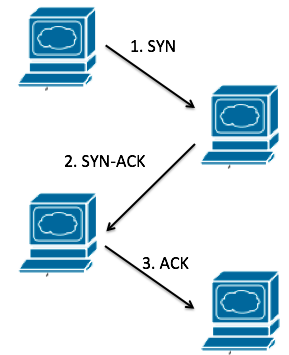
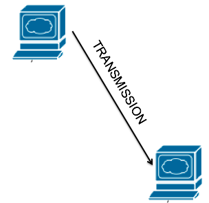
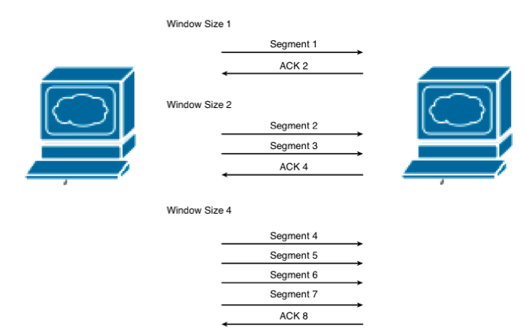

P105 Overview <<
Previous Next >> P107 TCP IP Stack
P106 TCP and UDP
TCP is a connection-oriented protocol that ensures the reliable transport of data segments from one device to another. During transmission, if a segment is dropped, it will be detected and resent or retransmitted by the originator device. Each communication is acknowledged upon receipt, providing a secure model to ensure successful communications. This type of transmission is great for all network data types, especially those that need delivery to be assured.
When a TCP communication is initiated, the originator and receiver perform a “three-way handshake” before starting the data transmission. In the first step, the originator sends a packet with a synchronization (SYN) flag set. Next, the receiver acknowledges receipt of this SYN flagged packet by sending back a synchronization-acknowledged (SYN-ACK) flagged packet. Finally, the originator sends an acknowledgement of the synchronization-acknowledged flagged packet, and then data transmission occurs.
TCP是一種面向連接的協議，可確保將數據段從一台設備可靠地傳輸到另一台設備。在傳輸過程中，如果某個段丟失，則發起方設備將檢測到該段並將其重新發送或重新發送。每次通信在收到後都會得到確認，從而提供一個安全的模型來確保成功進行通信。這種傳輸方式適用於所有網絡數據類型，尤其是那些需要確保傳輸的數據類型。
當啟動TCP通信時，發起方和接收方在開始數據傳輸之前執行“三向握手”。第一步，發起方發送一個設置了同步（SYN）標誌的數據包。接下來，接收器通過發回一個同步確認（SYN-ACK）標記數據包來確認此SYN標記數據包的接收。最後，始發者發送對已同步確認的標記數據包的確認，然後發生數據傳輸。
Example
Think of this like two students who want to discuss an important project that is upcoming. The first student, Bob, says to Jane, “Jane, I want to talk to you.” Next, Jane says, “Bob, I acknowledge that you want to talk to me and I am ready to listen.” Finally, Bob tells her, “Jane, I understand you are ready to listen. Let’s talk.” At this point, the two students can talk, knowing they are both ready to listen to each other.
就像兩個想討論即將開展的重要項目的學生一樣。 第一位學生Bob對Jane說：“Jane，我想和你說話。” 接下來，Jane說：“Bob，我承認你想和我說話，我已經準備好傾聽。” 最後，Bob告訴她：“Jane，我知道你已經準備好聽了。 讓我們談談。” 此時，兩個學生可以交談，知道他們倆都準備好了互相傾聽。

UDP, or user datagram protocol, was developed as a connectionless protocol in order to increase the speed of the network over TCP transmissions. Because of the three-way handshake in TCP, as well as all the delivery assurance and quality control, TCP has a good amount of network overhead that slows down its communications. Network engineers realized that sometimes you don’t need delivery assurance or quality control. So UDP was established.
UDP is considered unreliable, because if a segment is dropped during transmission, the sending device doesn’t know and doesn’t care. There is no retransmission. Once data is sent, it is gone. This is good, though, for audio and video streaming. In these applications, the data transferred is enormously large, and if a single segment is dropped it doesn’t affect the overall quality of the audio or video sent.
UDP（或用戶數據報協議）被開發為無連接協議，目的是通過TCP傳輸提高網絡速度。 由於TCP中的三向握手以及所有的交付保證和質量控制，TCP具有大量的網絡開銷，從而降低了其通信速度。 網絡工程師意識到有時您不需要交付保證或質量控制。 這樣就建立了UDP。
UDP被認為是不可靠的，因為如果在傳輸過程中丟棄了網段，則發送設備將不知道也不在乎。 沒有重傳。 數據一旦發送，就消失了。 但是，這對於音頻和視頻流來說是很好的。 在這些應用中，傳輸的數據非常大，如果丟棄單個片段，則不會影響所發送的音頻或視頻的整體質量。
Example
I like to think of UDP as my college calculus teacher. He started at one side of the board at 8 a.m., and by 9 a.m. he was done at the other side of the board. He never asked if the students understood what he said or wrote, he just kept transmitting. This is a great example of UDP.
我喜歡將UDP視為我的大學微積分老師。 他在上午8點從董事會的一側開始，到上午9點，他在董事會的另一側完成了工作。 他從不問學生是否理解他所說或寫的內容，他只是不斷地傳播。 這是UDP的一個很好的例子。

TCP Vs. UDP
TCP and UDP have many differences. TCP is reliable, but UDP is unreliable. TCP focuses on connection-oriented communications using the three-way handshake, while UDP is connectionless. TCP uses windowing, discussed in more detail later, to control the amount of data sent at a given time based on changing network speeds, but UDP simply transmits everything once with no windowing. TCP also supports segment sequencing; UDP just hopes it gets to the destination in the right order. Finally, TCP waits for acknowledgements, but UDP just hopes it got there. To simplify it, TCP is an assured and reliable communication method, UDP is just a best-effort model.
TCP和UDP有很多區別。 TCP是可靠的，但UDP是不可靠的。 TCP專注於使用三向握手的面向連接的通信，而UDP是無連接的。 TCP使用加窗（稍後將詳細討論）來基於不斷變化的網絡速度來控制在給定時間發送的數據量，但是UDP僅傳輸所有信息一次而沒有加窗。 TCP還支持段排序； UDP只是希望它以正確的順序到達目的地。 最後，TCP等待確認，但是UDP只是希望它到達目的地。 為簡化起見，TCP是一種有保證且可靠的通信方法，UDP只是一種盡力而為的模型。
TCP Windowing
TCP also supports a concept called windowing. If you have ever copied a file from a network share drive on the Windows operating system, you have seen windowing. Have you ever noticed when you copy a file over the network, it may start out saying there are “2 minutes remaining” until completion, then it jumps up to “3 hours remaining,” then back down to “30 minutes remaining”? This is TCP windowing in action.
Essentially, when a communication session is established with TCP, it first performs the three-way handshake. Next, it starts with a small window size, like windows size 1 in the image below, where a single segment is sent over the network and acknowledged. If this is successful, it increases the window size to 2, sending two segments at a time. It continues to do this, increasing the number of segments each time, transmitting more data in each window until an error occurs and retransmissions must be done. If errors occur, TCP understands that it must have been transmitting too fast, so it shrinks the window to slow down communication. As transmissions occur successfully, it again increases the window to push more data in each window. This window size is continually adjusted to get the most segments per window with the least errors in communication.
TCP還支持稱為窗口化的概念。如果您曾經從Windows操作系統上的網絡共享驅動器中復製過文件，則會看到窗口。您是否曾經註意到通過網絡複製文件時，它可能會說“剩餘2分鐘”直到完成，然後跳到“剩餘3小時”，然後又跳回到“剩餘30分鐘”？這是TCP窗口在起作用。
本質上，當使用TCP建立通信會話時，它首先執行三向握手。接下來，它以較小的窗口大小開始，如下面的圖片中的窗口大小1所示，其中單個段通過網絡發送並確認。如果成功，它將窗口大小增加到2，一次發送兩個段。它繼續執行此操作，每次增加段數，在每個窗口中傳輸更多數據，直到發生錯誤並必須重新傳輸為止。如果發生錯誤，TCP知道它一定傳輸速度太快，因此它縮小了窗口以減慢通信速度。隨著傳輸成功進行，它將再次增加窗口以在每個窗口中推送更多數據。不斷調整此窗口大小，以使每個窗口獲得最多的段，並且通信錯誤最少。

P105 Overview <<
Previous Next >> P107 TCP IP Stack